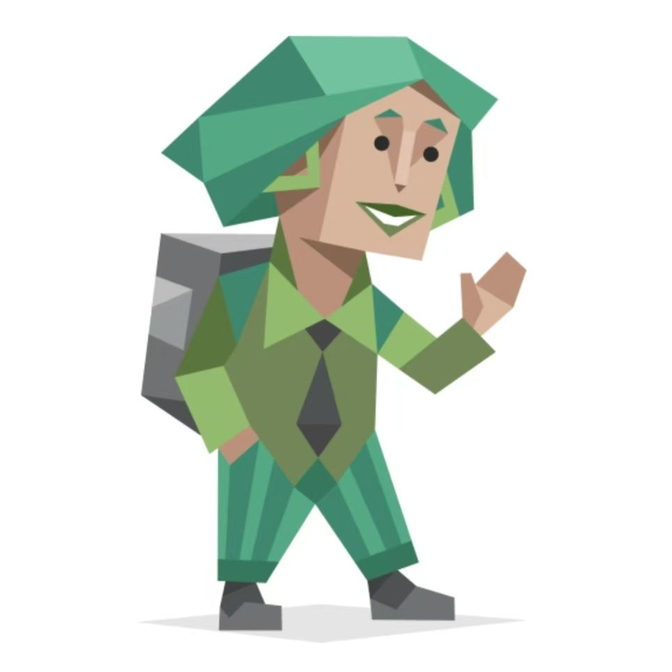

了解我的人格特质与性格画像

外向 E · 直觉 N · 情感 F · 感知 P · 起伏不定 T
我属于高外向型人格，更喜欢从与人交往、社交互动、集体活动中获取能量，乐于主动结识新朋友，擅长表达自身想法，性格开朗热情，不喜欢独处压抑的环境。在团队中积极活跃、善于沟通带动氛围，愿意主动交流分享，待人真诚大方，乐于参与集体事务，适应多人社交场景，拥有很强的亲和力与感染力。
我的远见直觉占比56%，相比现实细节，更擅长思考未来、联想想象、洞察事物深层含义与发展可能性。不局限于眼前现状，喜欢畅想未来规划、探索新鲜创意与新奇想法，思维灵活跳跃，富有想象力与创造力，擅长发散思考，对未知事物充满好奇，擅长捕捉灵感、挖掘事物背后的规律与长远趋势。
情感型占比高达91%，是人格核心特质。做选择时优先考虑人情、感受、共情他人情绪，心思细腻温柔，同理心极强，善于换位思考，在意他人心情与人际关系和谐。做事感性温柔、善良体贴，重视温暖真诚的相处模式，容易感知身边人的情绪变化，懂得包容体谅他人，看重情感联结，不喜欢冰冷理性、生硬冷漠的处事方式。
随性展望型占比52%，喜欢灵活自由、轻松多变的生活节奏，不喜欢死板严格的计划与束缚。乐于接受变化，擅长随机应变，适应能力强，做事随性松弛，愿意保留更多可能性，不急于下定论。生活与学习中灵活变通，思维开放自由，享受探索新鲜事物，讨厌刻板约束，擅长灵活应对突发状况。
动荡型人格占比85%，内心敏感细腻，情绪丰富细腻，自我要求较高，容易反思自我、在意他人看法，情绪波动相对明显。对待事情认真上心，容易多想、思虑周全，同时也拥有很强自我成长动力，愿意不断调整自己、完善自身，内心柔软细腻，情感丰富饱满，富有共情力与细腻的内心世界。